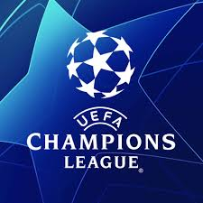

유럽 축구 연맹(UEFA)이 주관하는 축구 대회로, 유럽 각국에서 우수한 성적을 거둔 클럽들이 모여 유럽 최강의 축구 클럽을 결정하는 대회이다. 유럽은 세계 축구의 중심이며, FIFA 클럽 월드컵은 아직 역사가 짧고 권위가 부족하므로 실질적으로 세계에서 가장 권위 있는 '클럽' 축구 대회라 해도 과언이 아니다. 매년 7월에 예선이 시작되어 이듬해 5월까지 이어진다. UEFA 챔피언스 리그의 전신인 유러피언 컵은 각 리그 1위팀만 참가하는 대회였지만 흥행성을 위해 1992-93 시즌부터 명칭이 챔피언스 리그라는 현재의 이름으로 바뀌었으며, 1997-98 시즌부터는 각 리그 1위팀만이 아닌 상위권 팀들도 나갈수 있는 방식으로 바뀌면서 규모가 과거보단 훨씬 커지게 되었다. 스포츠 중에서 축구가 가장 인기가 많은 유럽에서는 챔피언스 리그의 위상이 가히 하늘을 찌르는데, 이는 다음 동영상 하나로 설명 할 수 있다. 하이네켄 소셜 마케팅 레알 마드리드 vs 밀란(한글 자막)이 광고는 전 세계적으로 마케팅 분야에서 대단한 반향을 불러왔고, 소셜 마케팅 최고의 성공 사례로 계속해서 회자되고 있다. 사실상 세계 최강의 클럽 축구팀을 선발하는 대회이며 가장 수준 높은 대회로 평가받는 만큼, FIFA 월드컵과도 자주 비교되곤 하며 우승한 팀의 에이스는 발롱도르에 가까워진다. 전 세계 단일 스포츠 이벤트 결승 시청자 수는 4년마다 세계 최강의 축구 국가대표팀을 결정하는 FIFA 월드컵이 압도적인 1위이며, 2위는 UEFA유로 결승이며 미식 축구 리그 NFL의 결승전인 슈퍼볼과 함께 UEFA 챔피언스 리그 결승전이 3위를 다툰다.
주요 팀 